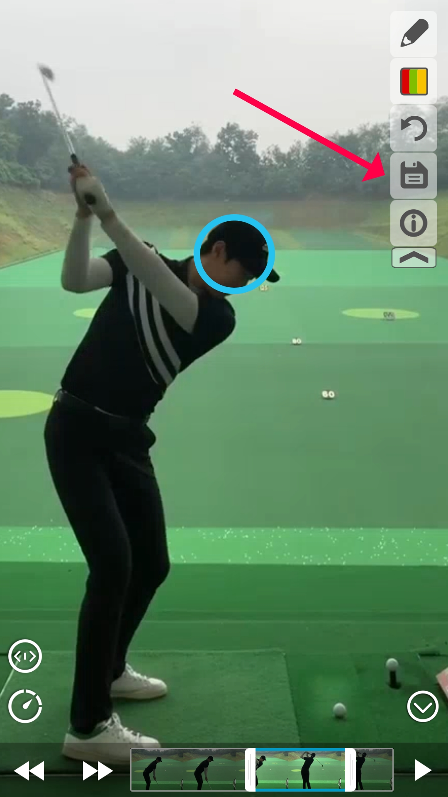
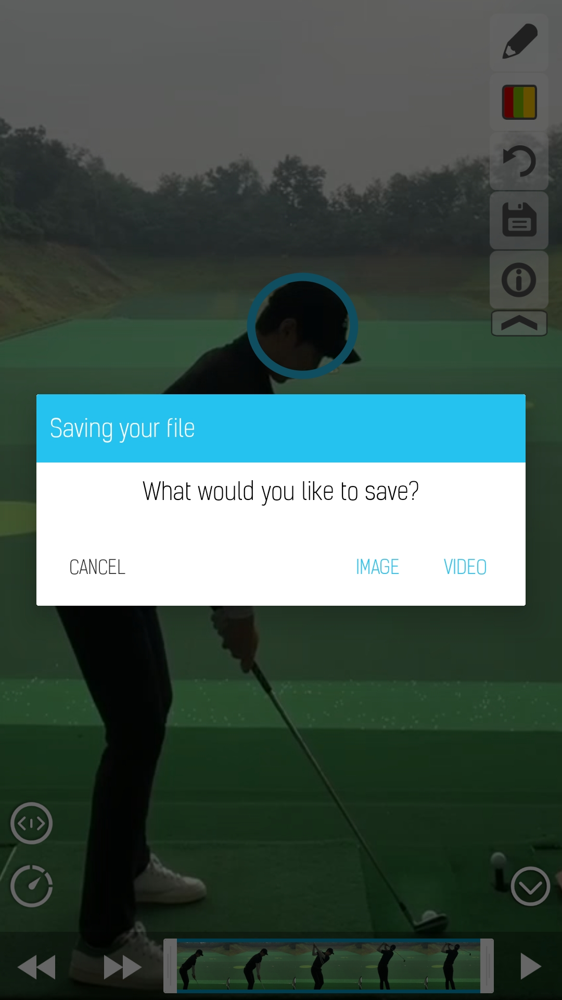
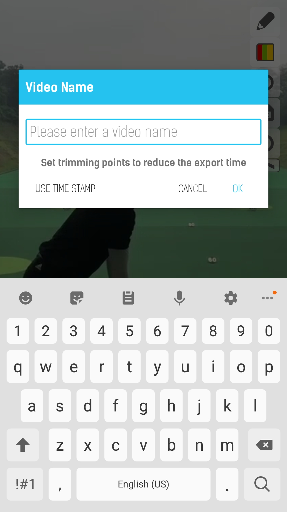
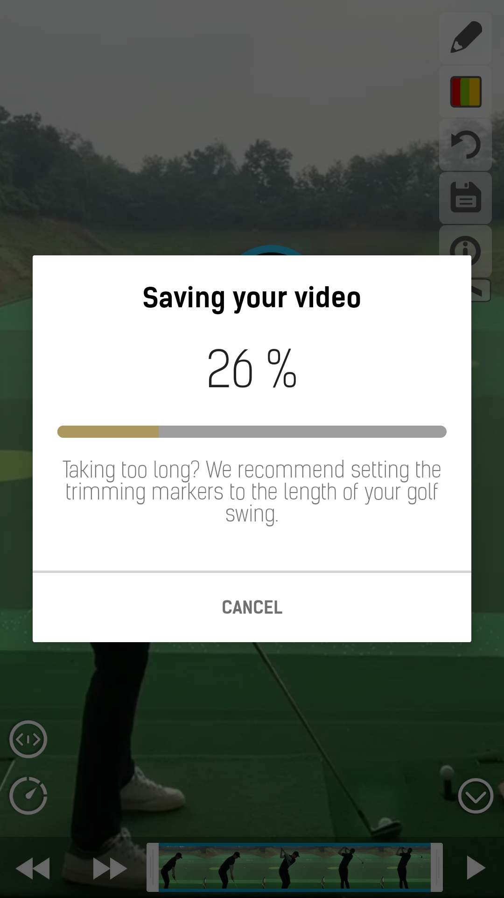

To reduce the export/waiting time, it is important to set the trimming points to the length of your golf swing.
You can set the trimming points by adjusting the handles, as shown below:

(please see the video trimmer instructions)
All drawn shapes will be included in the exported video.
If you are happy with the shapes and the trimming points, you can now press the save button, as shown below:

Then press "VIDEO":
You can now enter a name for your video, or you can select the "USE TIME STAMP":
A New dialog will appear, indicating the saving progress:
Once the video has saved successfully, it will display a message saying "Saved successfully" and return to the previous page.